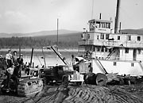
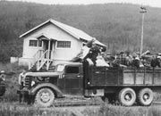
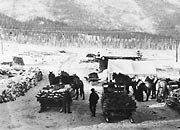
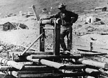
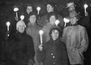
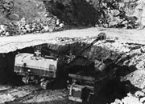
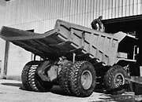

Mining has been part of Yukon life for more than 100 years. As early as 1869 “minute specks of gold” were reported along the Yukon River by Hudson’s Bay Company traders. Other discoveries followed on the Big Salmon, Stewart and Fortymile rivers, but it was the discovery of 1896 in the Klondike valley that changed the Yukon forever.
Thousands of people worked in the mines; thousands more worked for businesses that served them. Men brought their families north to join them and the territory acquired a veneer of permanence. The short-term nature of many mines meant that homes and settlements were often short-lived. In the early years, the work was labour-intensive, and jobs were plentiful; but within a short time large-scale mechanical technology had changed the face of mining. Huge dredges and extensive hydraulicking operations replaced smaller operations, and many creek communities that boomed in the first years faded away.
Mining activity brought new transportation and infrastructure, creating new communities. Silver-lead finds in the Mayo/Keno/Elsa area after 1913 transformed the region into a busy economic centre. By 1927 the freight hauled to and from Mayo totalled 10,138 tons, more than double that between Whitehorse and Dawson.
Although there have always been cyclical ups and downs, mining continues to be important to the Yukon’s economy. Copper mining in the Whitehorse area, silver mining at Windy Arm, coal north of Dawson, hydrocarbon development in the Beaufort Sea, gold mining in the Wheaton Valley and asbestos mining at Clinton Creek have all provided jobs for Yukon people.
“Everybody is excited over the mines, and the eastern people have yet to hear one half of it.”
Israel Albert Lee
Seattle, August 25, 1897
Continue to Arts, crafts and cultureGood prospects
(Above) Horse and miners at a Carmacks coal mine, 1912.
YA, Back collection, 90/19 #128
The steamer Nasutlin (known as the Nasty) at Gold Creek Placers, Stewart River, c.1950.
YA, Pepper collection, 89/59 #15
Yukon Consolidated Gold Corporation workers walk off the job at Camp 9, demanding another dollar per day, July 1941.
YA, Butterworth collection #9559
Horse-drawn sleighs loaded with silver ore in Keno City, c.1922.
YA, Schellinger collection #5839
A First Nations man stands beside a mine shaft on Bonanza Creek, August 1900.
YA, Mizony collection #4250
Underground at Pueblo Mine, near Whitehorse, n.d.
YA, Scott/Phelps collection, 89/31 #147
Faro’s Anvil Mine operating at subzero temperatures.
YA, Yukon: Public Affairs collection, 81/18, f/9
Miner at the Clinton Creek asbestos mine.
YA, Yukon: Public Affairs collection, 81/18, f/5